Un ecosistema híbrido, libro impreso con toolkit desplegable y libro web interactivo, que sistematiza una metodología de codiseño con 18 años de historia y la pone en manos de equipos multidisciplinarios.
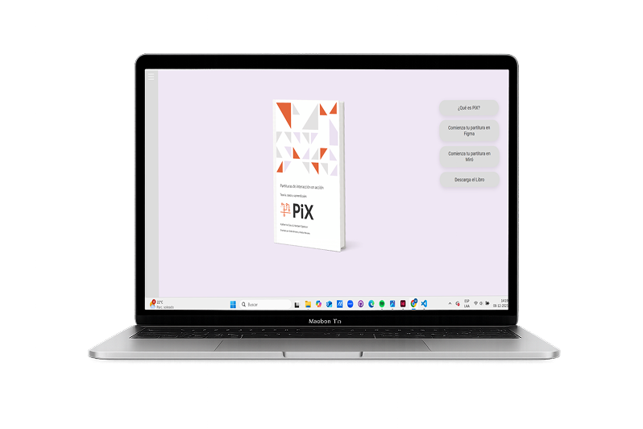
PiX nace en 2008 en la e[ad] PUCV y desde entonces se ha usado en aulas, consultorías y equipos de producto. Pero no existía ni un cuerpo bibliográfico consolidado ni un repositorio de casos reales: la herramienta se aprendía por transmisión empírica y quedaba encerrada en la academia.
Nadie podía ver cómo otros equipos habían adaptado la partitura a sus propios proyectos.
Diseño, negocio y desarrollo no compartían un lenguaje que modelara a la vez experiencia y sistema.
No había plantillas ni materiales tangibles para facilitar un taller de codiseño.
Inspirada en la lógica de las partituras musicales, PiX mapea paso a paso la interacción entre una persona y un servicio a lo largo del tiempo. Se lee horizontalmente en tres planos simultáneos:
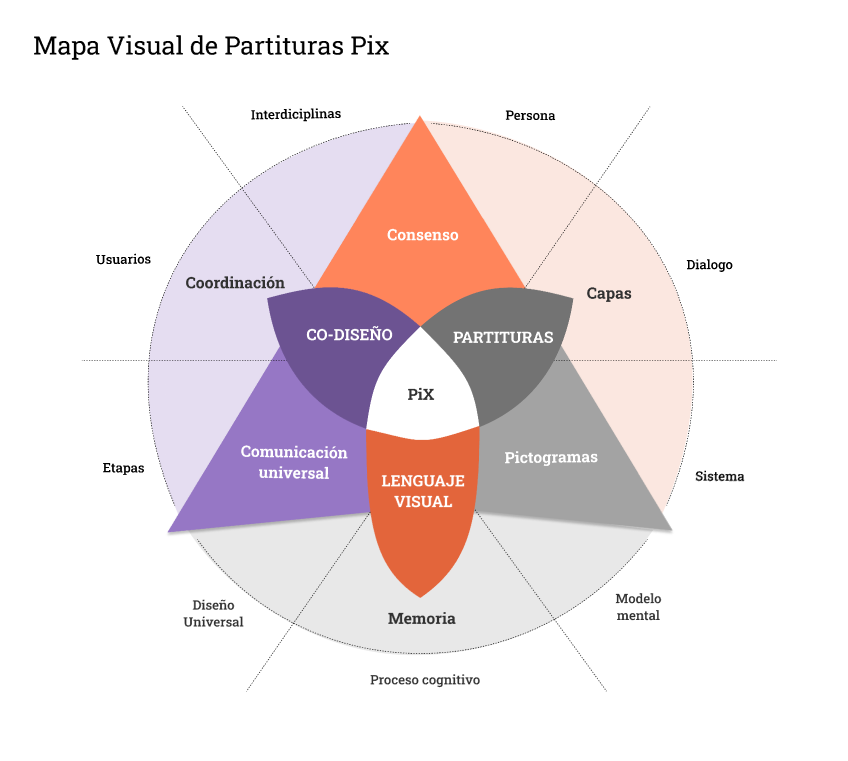
Flujos inclusivos con una cuarta capa de pantallas para alinear accesibilidad y desarrollo.
La partitura detectó brechas técnicas y datos inexistentes antes de escribir código.
Coordinación remota entre UX, producto y desarrollo para alinear el MVP y estimar sprints.
Mapeo de experiencias espaciales y mnemotécnicas para adultos mayores con deterioro cognitivo.
Codiseño en aula de escuela pública, con estudiantes como coautores de la partitura.
Lectura crítica del espacio urbano, la precarización laboral y el marketplace solidario.
17,4 × 24,3 cm · Toolkit · Solapas · Papel premium
Las solapas funcionan como marcadores que te acompañan mientras navegas la partitura. El formato portátil está pensado para anotar, subrayar y compartir en un taller.
Al final del libro, un lienzo tríptico desplegable con pixogramas prepicados de Usuario, Diálogo y Sistema permite prototipar flujos en papel, sin depender de pantallas.
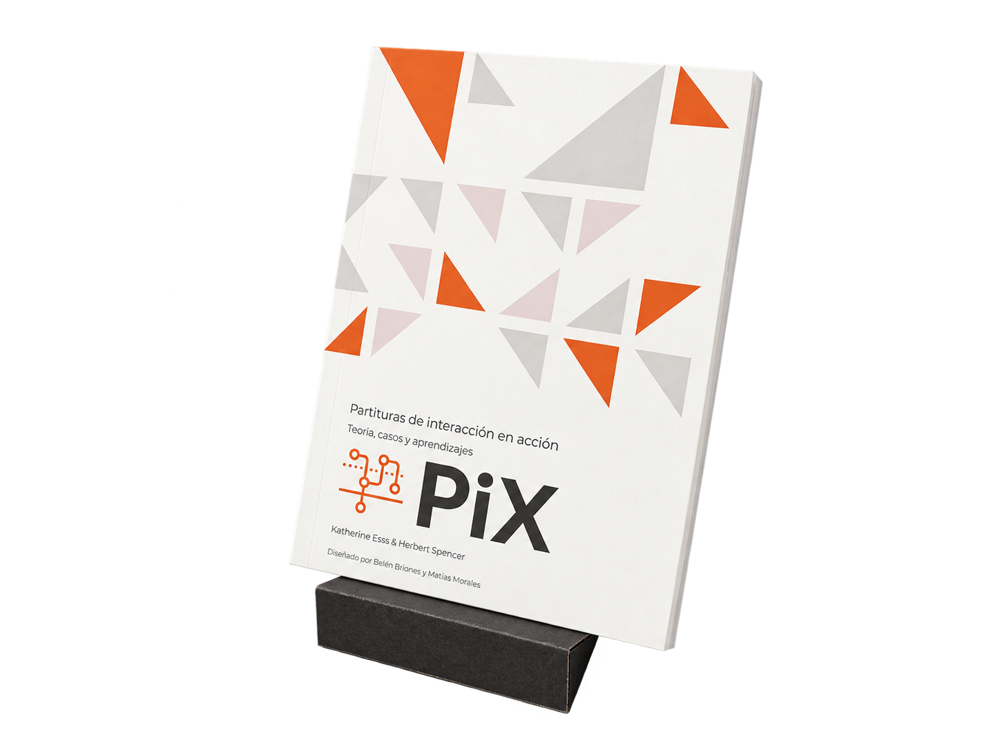
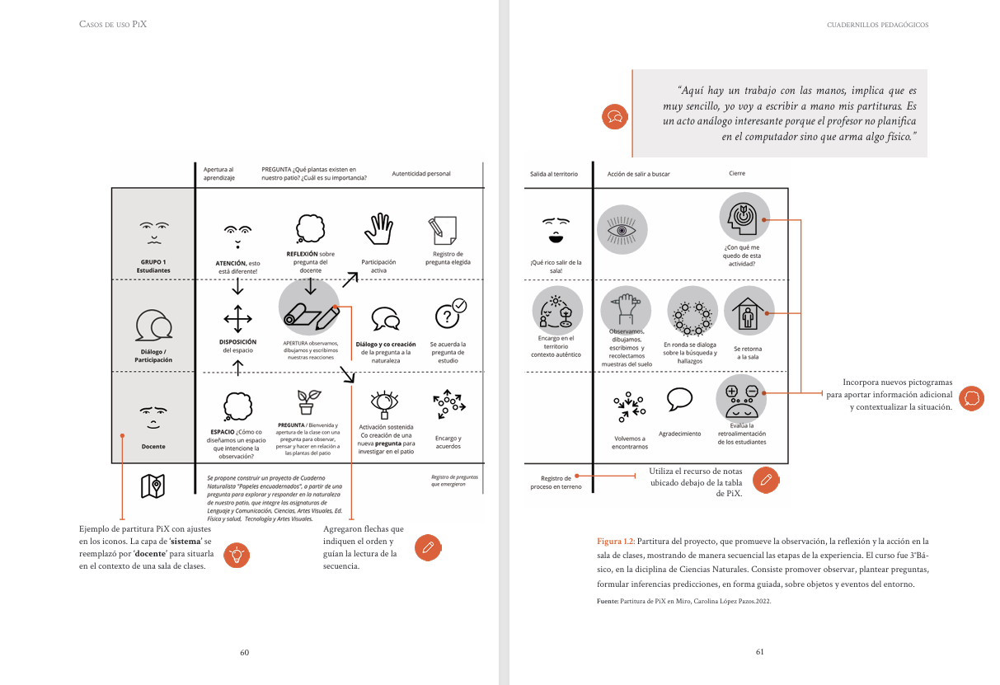
Cada capítulo abre con una composición de triángulos generada en p5.js: mismo sistema, nunca la misma imagen, de modo que el libro se hojea reconociendo el lenguaje sin repetirse.
Folio de sección en verticales, caja de texto angosta y margen exterior generoso: el ancho de columna deja espacio libre al costado para anotar a mano mientras se lee la partitura.
Cada caso de uso viene con su ilustración animada en p5.js: ves cómo se construye la partitura, no solo el resultado final. La navegación lateral está pensada para explorar sin orden, salta de educación pública a fintech, de economía social a política urbana, y al cierre de cada sección hay enlaces directos para comenzar tu propia partitura en Figma o Miro.
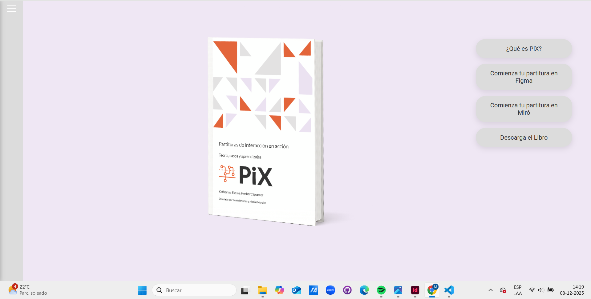
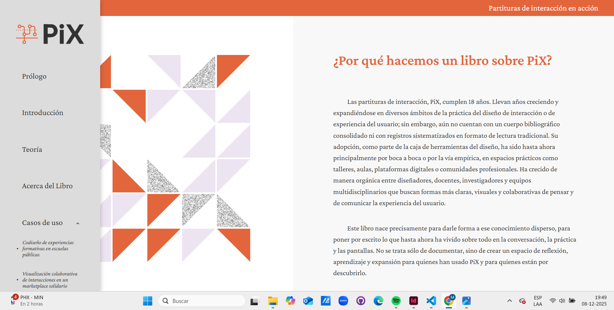
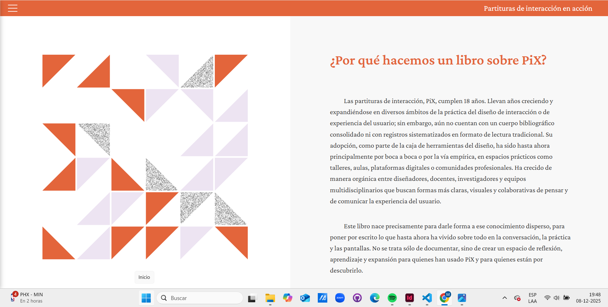
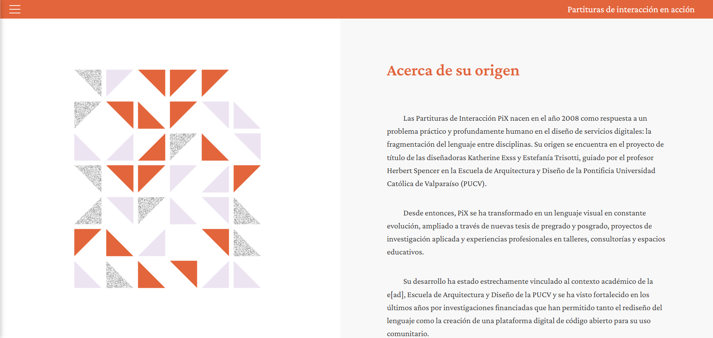
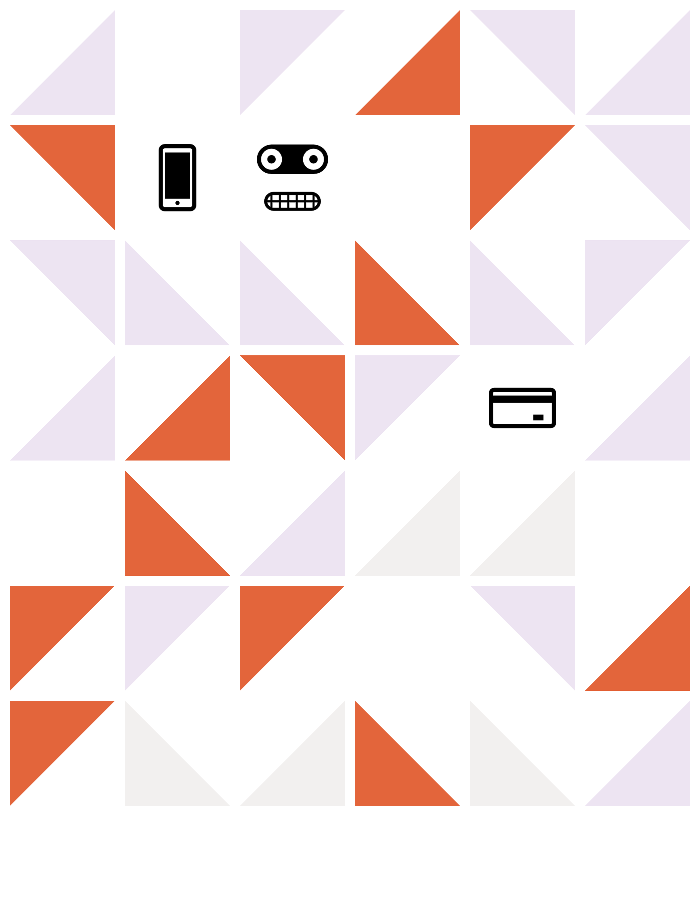
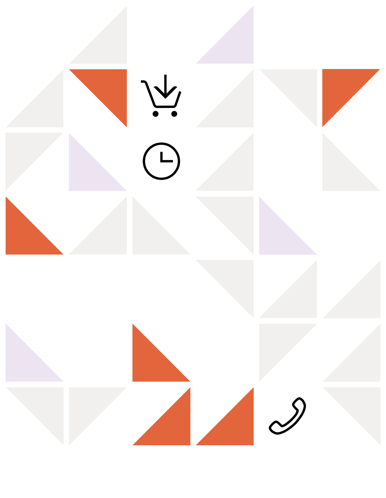
HTML5 semántico, CSS modular responsivo, JavaScript y p5.js embebido. Versionado en GitHub y alojado en GitHub Pages.
Ver libro web ↗Lato en rótulos y titulares, para dialogar con el isologo y transmitir precisión. Crimson Pro con serifas para lectura continua y citas, aportando calidez editorial.
El sitio avanza en cuatro niveles: presenta el problema, expande el contexto, introduce el lenguaje en sus tres capas y diferencia formatos (libro y web) con acciones a Figma, Miro y descarga.
Sistema abstracto inspirado en el tangrama: triángulos rectángulos combinados algorítmicamente en p5.js, distintos en cada portadilla pero siempre reconocibles como PiX.
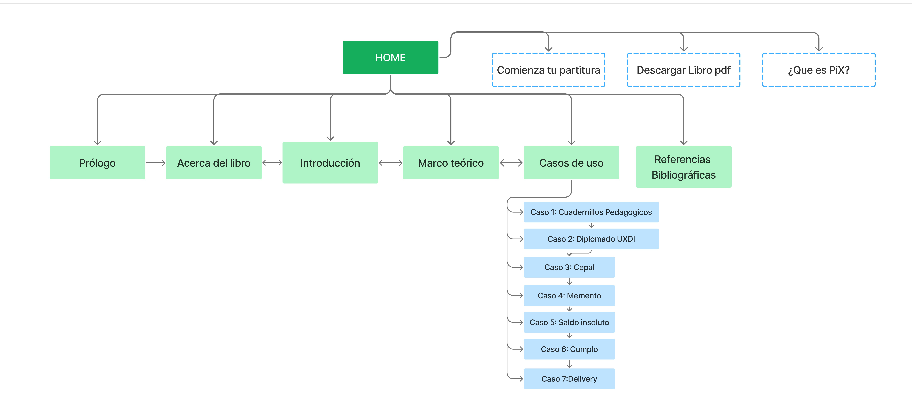
Explicitar la capa de Persona obliga a ingeniería y negocio a conectar con emociones y frustraciones reales, no solo con pantallas.
La partitura raya la cancha en etapa de discovery y resuelve desacuerdos de arquitectura antes de gastar horas de desarrollo.
El toolkit análogo democratiza el diseño en contextos no técnicos; la web entrega inmediatez, código abierto y recursos para la industria.
«El rol del diseño de interacción no termina en la interfaz: consiste en crear puentes de entendimiento entre disciplinas.»